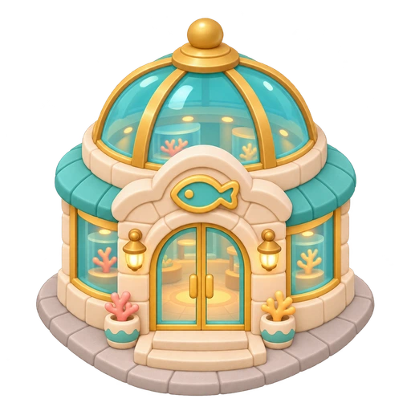
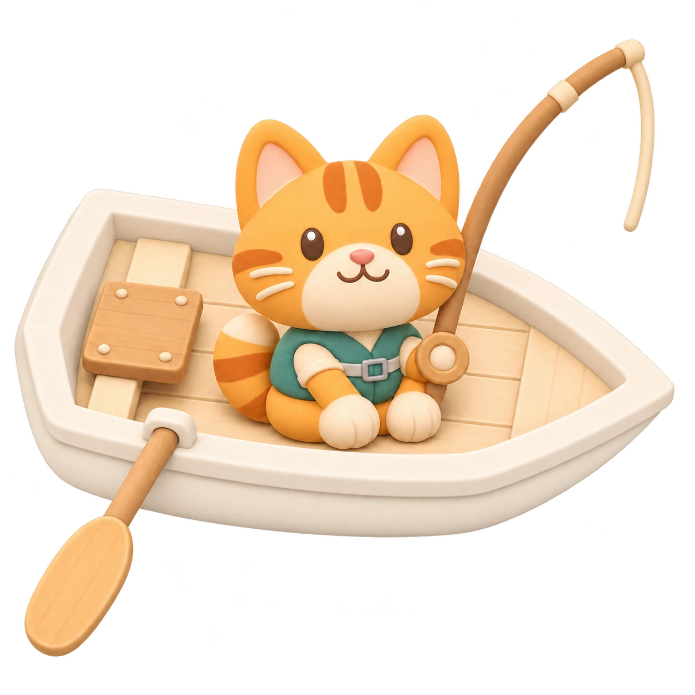

LITTLE PAWS, BIG OCEAN
萌兽渔港
钓鱼经营版
港口金币
30
累计鱼获
0
条
渔获产值 / 秒
0.00
金币
近30秒 · 含未售
最高峰值
0.00
／秒
排行榜 ↗
本地独立存档
船长账号
?
晴湾浅海
01 / 03
海域地图

水族馆
未解锁
船长的小目标
+20 金币
划过发光浮标，收获 3 条鱼
0 / 3
TAKE A LITTLE BREAK
小船歇一会儿
你的渔场进度已经保存。
继续出海
把小小渔港，交给毛茸茸的伙伴。
划过普通浮漂收鱼 · 点击稀有浮漂搏鱼
正在把小船推向大海…
LITTLE PAWS, A HARBOR OF YOUR OWN
让每一次收获，
都找到归处。
一群动物船员，一座属于你的港口。
带着珍藏的鱼，去拜访远方的朋友。

航程云存档
峰值排行榜
水族馆拜访
WELCOME ABOARD, CAPTAIN
欢迎来到萌兽渔港
登录后继续航程，或注册一位新船长。
登录
注册
船长名称
密码
登录，继续航程
船长名称、最高峰值和已开放水族馆的陈列会展示给其他玩家。请妥善保管密码。
×